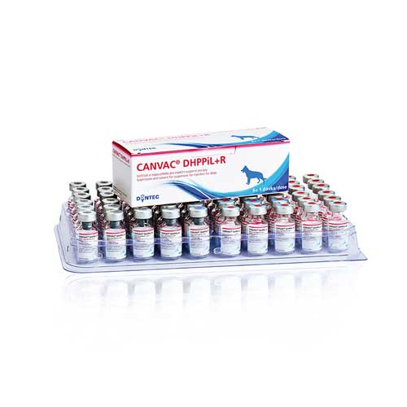

واکسن پارا آنفولانزا، پارواویروس، دیستمپر، لارنگو تراکئیت عفونی، لپتوسپیرا و هاری DYNTEC، جمهوری چک
📝کاربرد واکسن:
واکسن کنواک DHPPiL + R جهت ایجاد ایمنی فعال در سگها علیه بیماریهای دیستمپر، هپاتیت عفونی سگها، لارینگوتراکئیت عفونی سگها، پاروو ویروس سگها، لپتوسپیروز ناشی از سرووارهای لپتوسپیرا ایکتروهموراژی، لپتوسپیرا گریپوتیفوسا، لپتوسپیرا سجرو و همچنین علیه بیماری هاری ایمنی قطعی از ۲ تا ۳ هفته بعد از واکسیناسیون اولیه ایجاد میشود و حداقل به مدت یک سال باقی میماند.
📝شکل و نوع واکسن:
ویال لیوفیلیزه: با رنگ صورتی مایل به زرد
ویال مایع حلال: حاوی ویروس غیرفعال هاری به رنگ سفید مایل به صورتی
📝ترکیبات واکسن:
یک دز واکسن حاوی:
ویال لیوفیلیزه واکسن:
ویروس پارووویروس انتریدیتیس سگها
ویروس پاراآنفلوانزا سگها
ویروس دیستمپر سگها
ویروس لارینگوتراکئیت سگها
لپتوسپیرا ایکتروهموراژی غیرفعالشده
لپتوسپیرا گریپوتیفوسا غیرفعالشده
لپتوسپیرا سجرو غیرفعالشده
ویال R حاوی حلال:
ویروس هاری غیرفعال شده
📝حیوان هدف:
سگ
📝دز و نحوه مصرف:
۱ میلیلیتر به صورت زیرجلدی در ناحیه پشت کتف
📝برنامه واکسیناسیون:
واکسن ۸ گانه + هاری کنواک را بعد از ۳ ماهگی میتوان تزریق کرد. دز تکرار آن نیز سالیانه خواهد بود.
📝موارد منع مصرف:
در صورت وجود بیماریهای عفونی حاد و بیماریهای تبزا
در صورت مشاهده واکنش های نامطلوب پس از واکسیناسیون یا پاسخ آلرژیک در واکسیناسیونهای گذشته
اعمال استرس بر حیوانات (جابهجایی و دماهای بالای محیطی)
در انتهای دوران آبستنی و همچنین بلافاصله پس از زایمان
📝شرایط نگهداری:
در محیط خشک، خنک و در دمای ۲ تا ۸ درجه سانتی گراد نگهداری شود.
📝عمر قفسهای :
۲۴ ماه
📝تولیدکننده:
شرکت DYNTEC، جمهوری چک